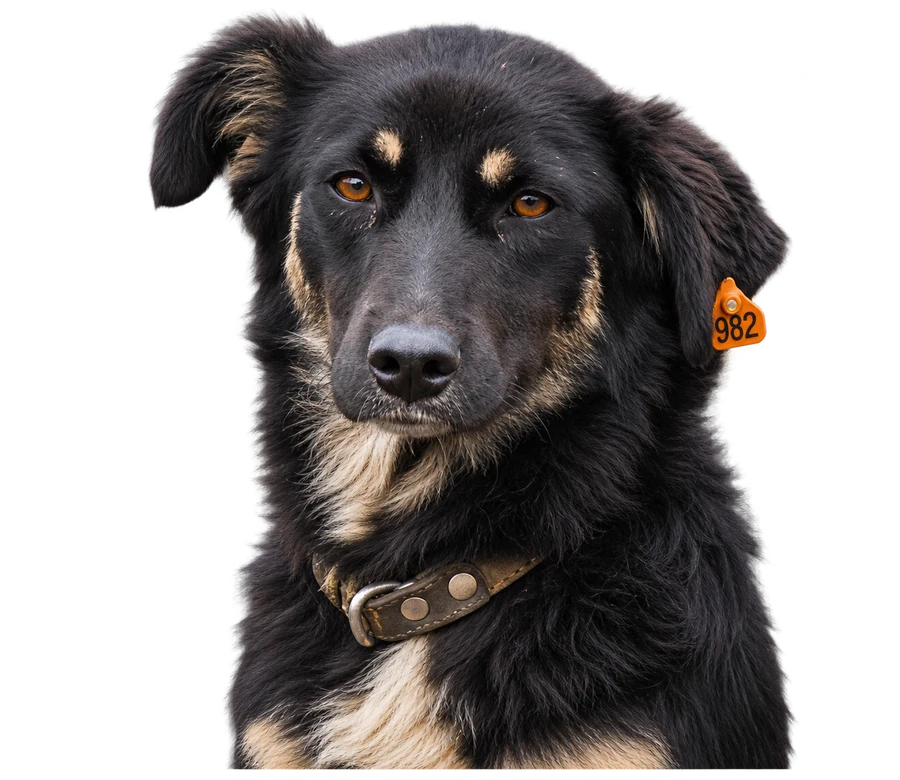

Стать опекуном
Станьте опекуном собаки — подарите ей шанс на счастливую жизнь!
В нашем приюте есть собаки, которые не смогут выжить на улице. Среди них — пожилые хвостики, собаки с хроническими заболеваниями и те, кому особенно сложно адаптироваться к уличной жизни. Опека помогает таким собакамим оставаться в безопасности, получать питание и необходимую помощь.
Опека — по договору

Стоимость
До 4 968 руб. в месяц
160 руб. 25 коп. в день
Кто может
Любой желающий: частные лица и организации.
Нужно ли приезжать
Нет, помогать можно из любого города.
Шаг 01
Выберите собаку
Познакомьтесь с нашими хвостиками в группе ВК — собаки, которым нужен опекун, публикуются в отдельных постах, — или приезжайте в приют лично. Возможно, именно здесь вас ждёт ваш будущий друг!
Сколько стоит опека?
160 руб. 25 коп. в день — не более 4 968 руб. в месяц за одну собаку. Эти средства идут на содержание животного и минимально необходимую ветеринарную помощь.
Шаг 02
Напишите нам
Отправьте в сообщения группы ВК: «Хочу стать опекуном». Сотрудник приюта ответит на вопросы и поможет оформить опеку, а если вы еще не выбрали опекаемого, подскажет, кому особенно нужна помощь.
Почему это важно
Согласно законодательству, собаки после стерилизации подлежат возврату в прежнюю среду обитания. Но для некоторых возвращение на улицу невозможно.
Шаг 03
Кто может стать опекуном?
Любой желающий! Опекунами могут быть как частные лица, так и организации.
- Индивидуальная опека — вы самостоятельно помогаете выбранной собаке.
- Совместная опека — несколько человек объединяются, чтобы заботиться об одном хвостике. Договор с приютом при этом заключается с одним человеком.
Хотите присоединиться к группе опекунов?Группа опекунов
Ищите единомышленников в чате волонтёров. Чтобы попасть туда, напишите в личные сообщения группы.
Нужно ли приезжать в приют?
Нет, это необязательно. Главное участие опекуна — финансовая поддержка содержания и необходимого ухода за собакой.
Помогать можно из любого города! Многие опекуны живут далеко от Омска, но это не мешает им заботиться о своих подопечных.
Для вас — возможность помочь
Для собаки — шанс на жизнь!
Самое главное
Подарите собаке заботу, безопасность и надежду!
Напишите маркетологам в сообщения группы, и мы поможем выбрать хвостика, которому особенно нужна ваша поддержка.